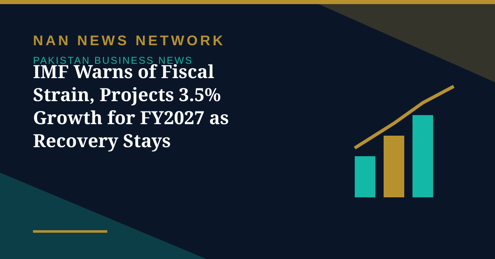

IMF Warns of Fiscal Strain, Projects 3.5% Growth for FY2027 as Recovery Stays Vulnerable

The International Monetary Fund (IMF) has warned that Pakistan's economic recovery remains vulnerable to global energy shocks, geopolitical tensions and tighter financial conditions, projecting growth at 3.5 percent in fiscal year 2027 and urging the government to accelerate structural reforms, The Express Tribune reported on November 20.
Buffers must keep building, says IMF resident representative
Speaking at the sixth Pakistan Prosperity Forum, organised by the Policy Research Institute of Market Economy (PRIME), IMF Resident Representative Dr Mahir Binici said the country's growth outlook remained vulnerable to external developments, particularly given its dependence on imported energy and exposure to international financing conditions. \"To be candid on the medium-term outlook, we also project that the fiscal position over the medium term can weaken as imports rise and remittances moderate, so we have to continue building buffers,\" Binici said. He identified three principal channels through which global developments could affect Pakistan: a higher energy import bill and widening current account deficit; increased financing costs and tighter access to international markets; and potential weakness in exports and remittances amid protectionism and slower growth in destination economies. He urged Pakistan to raise its tax-to-GDP ratio to 15 percent and move beyond short-term macroeconomic stabilisation towards an export-led growth model.
Another programme? No clear answer
On the question of whether Pakistan can avoid another IMF programme for the next five years after the current $7 billion bailout package expires in less than one year, Binici did not give a clear answer. \"Pakistan's structure is driven by a saving-investment gap, so a current account deficit is natural and in line with fundamentals. Our assessment is that over the medium term the (current account) deficit remains below 1% of GDP,\" he said. He added that inflation is projected to ease to around 8 percent by the end of fiscal year 2027, while the current account deficit is expected to widen slightly but remain contained at near 1 percent of GDP. Binici also noted that Pakistan had regained stability but its weak growth was structural, with real per capita income up about 1.6 percent a year and investment under 13 percent of GDP, and exports down to around 10 percent of GDP.
Sources: The Express Tribune, November 20, 2026; Business Recorder, November 20, 2026; ProPakistani, November 20, 2026
More on Pakistan Business News
- Petrol Up by Re1 to Rs323 a Litre from November 20, Diesel Unchanged at Rs355
- State Firms Lose Rs342.8 Billion in First Half of FY2026 as Privatisation Push Continues
- SME Financing Targeted at Rs2 Trillion by 2028, Aurangzeb Tells Global Forum
- KSE-100 Falls 1,223 Points to 176,294 as Selling Grips PSX for a Second Day
- Pakistan Posts $39 Million Current Account Surplus in October as Deficit Narrows
- KSE-100 Gives Up 1,200-Point Rally to Close 665 Points Lower at 177,518
- SBP Warns of Premature Deindustrialisation as Manufacturing Stagnates
- KSE-100 Climbs 309 Points to 178,183 as Engineering and Power Lead
- PSX Recomposes KMI Islamic Index: Nine Companies In, 26 Out From November 30
- Pakistan Could Become World's Sixth-Largest Economy Before 2050, PM Sharif Says
- ECO Foreign Ministers Open Two-Day Meeting in Islamabad as Pakistan Takes Chairmanship
- KSE-100 Gains 500 Points as Mari Petroleum's Copper-Gold Discovery Fuels Late Rally
- Petrol Cut by Rs2 to Rs330 a Litre From November 14, Diesel Unchanged at Rs360
- Petrol Cut by Rs3 and Diesel by Rs4 a Litre From November 13, OGRA Notifies
- SBP Reserves Rise to $21.57 Billion as Rupee Holds Steady Near Rs276.61
- Pakistan's Exports Fall by $1 Billion After Afghanistan Trade Suspension, Commerce Secretary Tells MPs
- Listed Companies' Profits Jump 25% in First Nine Months of 2026 — Strongest in Three Years
- KSE-100 Crosses 180,000 Intraday Before Closing 251 Points Lower
- Petrol Cut by Rs8 to Rs338 a Litre, Diesel by Rs7 in Sixth Straight Reduction
- KSE-100 Surges 5,449 Points to 179,335 as US-Iran Tensions Ease
- Pakistan's Remittances Hit $3.89 Billion in October, Up 13.8% Year-on-Year
- PSX Stages Strongest Weekly Rally in Six Months as KSE-100 Jumps 7,477 Points
- Gold Steady at Rs429,136 a Tola as PSX Stays Shut for Iqbal Day
- PSX Stages Strongest Weekly Rally in Six Months as KSE-100 Jumps 7,477 Points
- Gold Falls Rs6,500 a Tola to Rs429,136 as Rupee Holds at Rs276.66
- Trade Deficit Widens 16% to $14.6 Billion as Imports Hit $26 Billion in July-October
- Petrol Price Cut by Rs6.59 to Rs346 a Litre in Fifth Straight Reduction
- PSX Snaps Four-Day Rally as KSE-100 Falls 1,493 Points to 173,887 on Profit-Taking
- Pakistan's External Debt Nearly Doubles to $135.1 Billion in a Decade, World Bank Reports
- PSX Closes at Record 175,380 as KSE-100 Gains 3,366 Points for a Second Day
- ABHI Microfinance Bank IPO Book-Building Opens Today, Bidding Runs November 5-6
- PSX Surges 3,995 Points to Close Above 172,000 on Geopolitical Optimism
- Pakistan Ranks 106th on 2026 Global Hunger Index as Report Questions Budget Priorities
- PSX Gains 1,454 Points to Close at 168,018 on Renewed Buying in Heavyweights
- Pakistan's First SPAC Deal Brings Solar Firm Ningbo Green Light Energy to the PSX
- PSX Recovers 155 Points to Close at 166,564 as Oil Prices Ease
- PSX in October: KSE-100 Fell 3,560 Points as War Fears and a Rate Hike Weighed
- Pakistan's Refineries Report 1,860% Profit Jump as War-Driven Margins Surge
- ABHI Microfinance Bank Plans Up to Rs3 Billion PSX IPO, Book-Building on November 5-6
- PSX Ends Four-Session Rally as Oil Surge Triggers Profit-Taking, Index Closes at 166,409
- Pakistan Cement Makers' Profits Rise 17% to Rs34.2 Billion in First Quarter of FY27
- Pakistan's Exports Rise 7.7% to $8.5 Billion but Trade Gap Widens in First Quarter
- SIFC Finalises 38 Projects Targeting $40 Billion in Investment, Senate Panel Told
- PSX Extends Recovery as KSE-100 Closes Above 167,000 on October 29
- Petrol, Diesel Prices Rise From October 29 as Government Revises Fuel Rates
- KSE-100 Gains 1,269 Points to Close Above 165,700
- Fauji Fertilizer's Nine-Month Profit Hits Rs71 Billion on Strong Urea Demand
- KSE-100 Climbs 1,428 Points to Close at 164,467 in Bullish Session
- Pakistan Signs $2.25 Billion Deal for Lithium Battery Gigafactory in Rawalpindi
- Gold Prices Rise by Rs1,400 per Tola in Pakistan on Monday
- Business Confidence Falls to 48 in October, State Bank Survey Shows
- Diesel Raised to Rs393.66 a Litre, Petrol Unchanged at Rs377.71
- FBR Activates Faceless Tax Audit System From October 15
- Pakistan-Iran Trade Disruption Puts $2.8 Billion Annual Trade at Stake